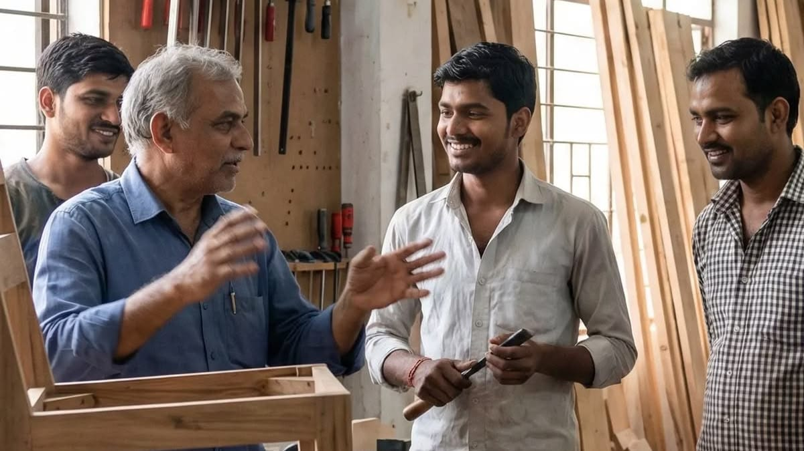
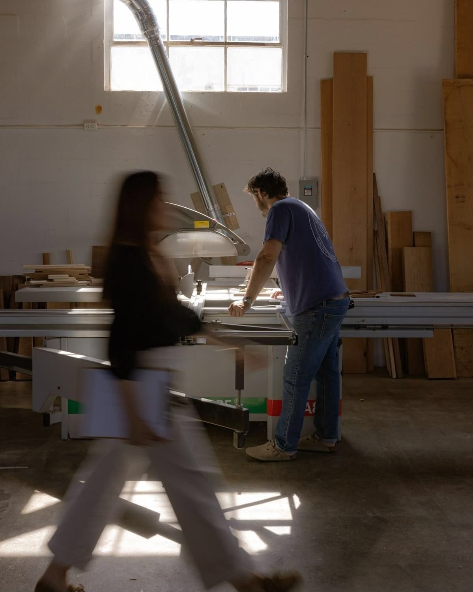
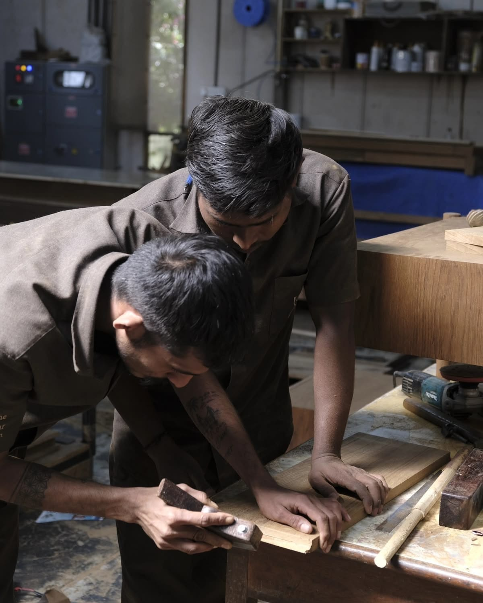
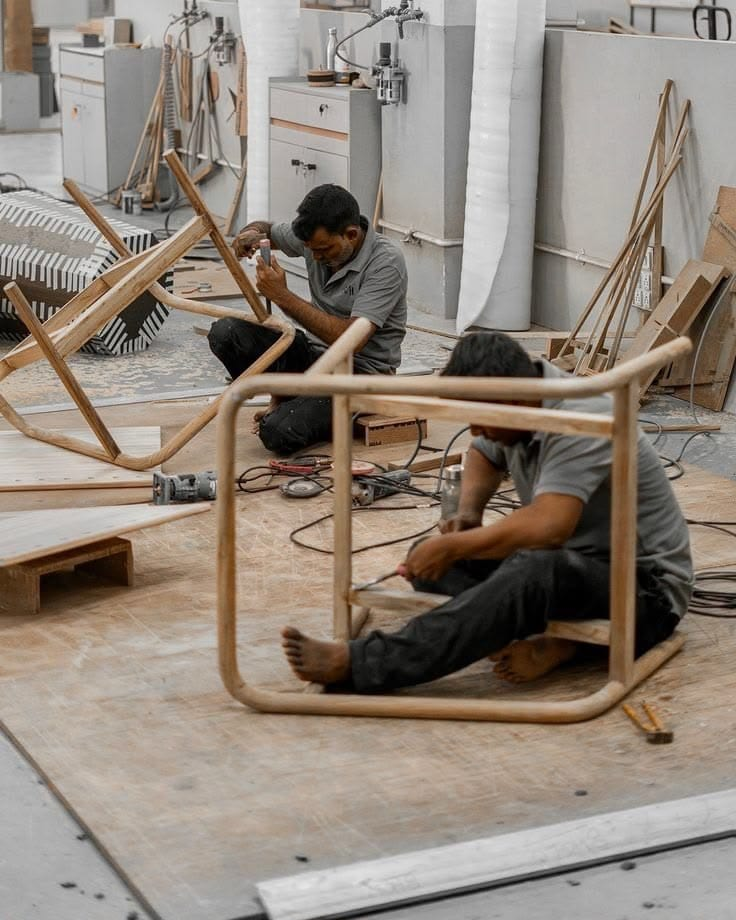

01 — Our ethos
The most ordinary
ingredient in the kitchen.
Salt never asks for attention, yet without it nothing tastes right. Salt Studios is built on that idea.

We believe the best design isn't the loudest object in the room. It's the one that makes everything around it work better: the table that makes a small living room feel generous, the décor piece that makes a house feel like home, the storage that quietly brings order to a busy household.
Our work is honest in material, fair in price, and considered down to the last joint and hinge. We don't design for the showroom photograph. We design for the tenth year of use.
Rooted in Gujarat
We come from Gujarat, which produces most of India's salt, and from Ahmedabad, where the Dandi March began. That history taught the country that something humble can carry enormous meaning, and that self-reliance starts with making things well at home.
We carry that forward as a studio that designs in India, for Indian homes, with Indian makers.
04 — Mission & vision
Why we exist,
where we're going.
To become India's most trusted partner for everyday home design. Just as salt is found in every kitchen, we want Salt Studios design in every kind of Indian home, quietly making daily life better.
“We don't aim to be the flavour. We aim to bring it out.”
05 — The team
Five roles, and what each one is still working on.
We're a young studio, so we'd rather be straight about it. Here's what each of us brings, and where we're thin — with what we're doing about it.
Chief Executive Officer
CEO
- Strength
- Holds the studio's vision and client relationships, and makes sure design, business and operations pull in the same direction.
- Weakness → our answer
- No long client history yet. We lead with prototypes, research and industry-tested work rather than claims.
Chief Design Officer
CDO
- Strength
- Hands-on across furniture, storage and décor, with a full tool stack — Fusion 360, KeyShot, Figma, Vizcom — and exposure to real manufacturing constraints in an industry studio.
- Weakness → our answer
- Portfolio leans toward concept and pre-production work. We propose a small pilot collection so we can prove ourselves on shelves.
Chief Financial Officer
CFO
- Strength
- Brings cost thinking into the design stage through shared components, standard hardware and material efficiency, protecting the client's margins.
- Weakness → our answer
- Limited access to real vendor pricing, so early costings are estimates. We validate them with manufacturers during the pilot.
Sales Manager
Growth & accounts
- Strength
- Understands the online furniture buyer, including their worries about fit, finish and durability, and shapes products and presentation around those concerns.
- Weakness → our answer
- No established sales pipeline yet. We lean on the partner's reach and data rather than compete with it.
Logistics & Operations
Make, pack, ship
- Strength
- Plans packaging, flat-pack construction, damage reduction, assembly and returns from day one — one of the biggest pain points in online furniture.
- Weakness → our answer
- No manufacturing network of our own. We see it as flexibility: we work with the partner's existing vendors and craft clusters instead of forcing our own.
As a team
Our biggest strength is range. Between us we cover design, money, customers and delivery, so we think about a product's whole life, not just its form. Our biggest weakness is experience at scale, and we're open about it — we make up for it with research depth, cost discipline and a willingness to start small and prove results.
06 — Work culture
How we work together.
Placeholder — copy coming
This section is reserved for the work culture write-up. Drop the text in here and delete this block.
- Three to five short principles, or one longer statement — both fit the layout.
- Photos go in
assets/img/asculture-01.jpg…culture-03.jpg. - The studio-at-a-glance numbers below are already live.



Salt Studios at a glance
2021
Founded in Ahmedabad
40+
Products designed
12
Brand partners
9
Collections in production